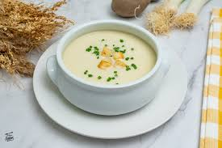

Vichyssoise
Este es un plato frío muy popular en la cocina internacional y es muy saludable.
Te vamos a explicar como hacer paso a paso este plato

La vichyssoise es una sopa fría de origen francés que se prepara principalmente con puerros, patatas, caldo de pollo y crema. Es un plato refrescante y delicioso, perfecto para los días calurosos. Aquí te dejo una receta sencilla para preparar vichyssoise:
Ingredientes:
- 4 puerros grandes (solo la parte blanca)
- 2 patatas medianas
- 4 tazas de caldo de pollo
- 1 taza de crema de leche
- 2 cucharadas de mantequilla
- Sal y pimienta al gusto
- Cebollino picado para decorar (opcional)
Instrucciones:
- Lava bien los puerros y córtalos en rodajas finas. Pela las patatas y córtalas en cubos pequeños.
- En una olla grande, derrite la mantequilla a fuego medio. Agrega los puerros y las patatas, y cocina durante unos 5 minutos hasta que estén ligeramente dorados.
- Añade el caldo de pollo a la olla y lleva a ebullición. Reduce el fuego y deja cocinar a fuego lento durante unos 20 minutos, o hasta que las patatas estén tiernas.
- Utiliza una licuadora de mano o una licuadora normal para triturar la sopa hasta obtener una textura suave. Si es necesario, puedes agregar un poco más de caldo para ajustar la consistencia.
- Agrega la crema de leche a la sopa triturada y mezcla bien. Sazona con sal y pimienta al gusto.
- Refrigera la vichyssoise durante al menos 2 horas antes de servir para que esté bien fría.
- Sirve la vichyssoise fría, decorada con cebollino picado si lo deseas.
Volver al plato anterior
Siguiente Plato Frio